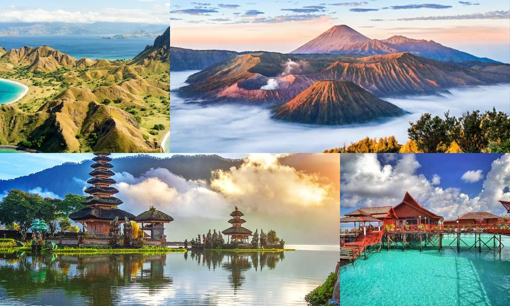

Wisata Alam Indonesia: Surga yang Tak Pernah Habis untuk Dijelajahi
Dipublikasikan pada 19 Juli 2024
Indonesia dikenal sebagai negara kepulauan dengan keindahan alam yang mempesona. Dari pantai-pantai eksotis di Bali, Raja Ampat, hingga Danau Toba di Sumatera, setiap sudut negeri ini menawarkan pemandangan yang luar biasa. Gunung-gunung megah seperti Bromo, Rinjani, hingga Cartenz Pyramid di Papua menjadi destinasi favorit bagi pecinta pendakian. Tidak hanya itu, kekayaan alam bawah laut Indonesia yang termasuk salah satu terbaik di dunia menjadikannya tujuan utama bagi wisatawan mancanegara.
Lebih dari sekadar panorama, wisata alam di Indonesia juga menawarkan pengalaman budaya yang unik. Banyak destinasi wisata yang terikat erat dengan tradisi masyarakat lokal, seperti upacara adat di Bali atau pesta rakyat di Sulawesi. Kuliner khas daerah pun menjadi daya tarik tambahan yang memperkaya pengalaman berwisata. Kini, tren eco-tourism atau pariwisata berkelanjutan semakin digalakkan, mengajak wisatawan untuk menikmati keindahan alam sekaligus ikut menjaga kelestariannya. Hal ini penting agar generasi mendatang tetap bisa merasakan keindahan yang sama. Singkatnya, Indonesia adalah surga wisata yang tak pernah habis untuk dijelajahi.
